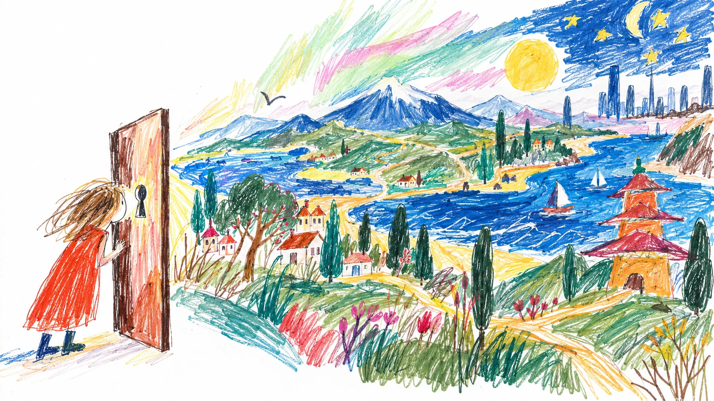
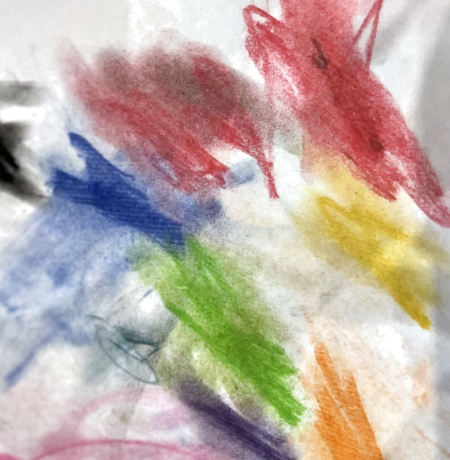
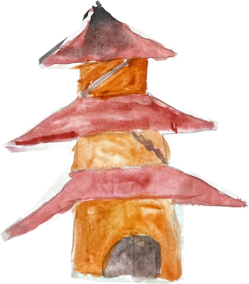
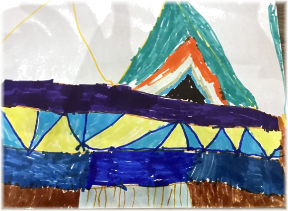
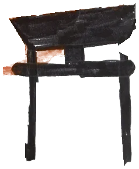
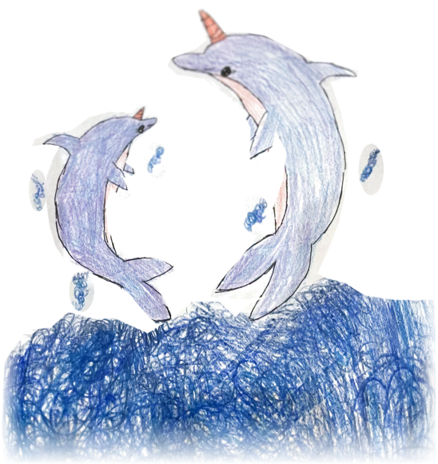

У ценностей есть внешние способы
Безопасность дают не только деньги: её дают сервисы, большие системы, свои инструменты и люди рядом. Сначала смотрим на эти способы в четырёх логиках мира и на реальных сигналах — потом выбираете свои.
АРХИТЕКТУРА ЧЕЛОВЕКА
Лаборатория Future Decoder · старт 3 января 2027
Не только искать ответы на старые вопросы.
Учиться задавать новые.
Смотрим на жизнь как на систему из восьми сфер — и начинаем не с себя, а с мира. У каждой ценности есть множество внешних способов реализации, и большинство мы просто не видим. Собираем систему надолго, но гибкой: с инструментами, чтобы пересобирать решения, когда меняется контекст.

Исследования принятия решений · Сценарии будущего
Системный анализ
Подход
Большинство программ личной стратегии начинают изнутри: с ваших драйверов, призвания, ценностных осей. Мы начинаем снаружи — с того, как по-разному мир уже умеет давать то, что для вас важно.
Безопасность дают не только деньги: её дают сервисы, большие системы, свои инструменты и люди рядом. Сначала смотрим на эти способы в четырёх логиках мира и на реальных сигналах — потом выбираете свои.
Восемь сфер, ваши «как сейчас» и «хочу», ценности и рычаги — на одной схеме. Видно, какой шаг двигает сразу несколько сфер, чем вы за него платите и что пока ничем не поддержано.
Не план на десять лет, который ломается при первой перемене. Система, в которой при изменении контекста меняется рычаг, а не вся жизнь: проверка на разные сценарии, пересмотр по кругу, первый шаг как эксперимент.
01 / От привычного выбора — к исследованию
Работа, обучение, переезд — в каждом решении есть представление о том, что будет дальше. В лаборатории мы делаем эти предположения явными: рассматриваем варианты и проверяем основания выбора.
Герберт Саймон исследовал решения при ограниченных знаниях и возможностях обработки информации. Мы не сравниваем все доступные в мире пути.
Герберт Саймон · NobelPrize.org ↗Канеман и Тверски показали: разные описания одной задачи могут приводить к разным решениям. Дело не только в ответе, но и в том, как поставлен вопрос.
Тверски и Канеман · исследование 1981 ↗Участникам предлагали варианты с одинаковыми исходами, но описывали их через сохранённые или потерянные жизни. Предпочтения менялись вместе с формулировкой.
В 2002 году премию получил Даниэль Канеман — за вклад психологических исследований в экономику, особенно в изучение решений при неопределённости. Это не премия «за проектирование жизни».
Официальное описание премии ↗Шактер, Аддис и Бакнер описали связь памяти с воображением будущего. Сохранённый опыт становится материалом для новых возможных событий.
Шактер, Аддис, Бакнер · обзор ↗* Премия Шведского государственного банка по экономическим наукам памяти Альфреда Нобеля. Эти работы объясняют механизмы выбора; они не подтверждают эффективность нашей программы.
Новый вопрос — другие варианты.
Как всё успевать?
Что изменить в организации работы, чтобы сохранить доход и освободить время?
Учебные примеры нашей работы с вопросами. Не повторение эксперимента Канемана и Тверски и не гарантия результата.
02 / Как мы принимаем решения
Пять точек, в которых можно заметить привычный выбор — и попробовать действовать иначе.
Из чего я собираю картину мира?

Как часто получается
Новости, знакомые мнения, тревожные события. Могу принять заметную часть за всю картину.
Как может быть
Изучаю разные сферы, данные и опыт людей. Сопоставляю угрозы, возможности и то, чего пока не знаю.
Негативные новости в среднем вызывают более сильную физиологическую реакцию.
В 17 странах измеряли физиологические реакции людей на реальные телевизионные новости.
В среднем реакция на негатив была сильнее. Но между людьми обнаружились значительные различия.
Не ограничиваемся новостной лентой. Сравниваем источники, смотрим на изменения в работе, образовании, технологиях и повседневной жизни.
Исследование не доказывает, что плохие новости неизбежно создают негативное будущее. Расширение контекста — наш практический принцип.
Исследование: первоисточник ↗Какое будущее я представляю?

Как часто получается
Из прошлого опыта собираю один образ будущего. Другие варианты могут просто не приходить в голову.
Как может быть
Представляю несколько вариантов. Разделяю желаемое, возможное и то, что пока только предполагаю.
Память и воображение будущего опираются на частично общие системы мозга.
Сопоставляли данные о воспоминании прошлого и мысленном представлении будущих событий.
Сохранённая информация служит материалом для конструирования возможного будущего.
Добавляем новые примеры к личному опыту. В группах сравниваем разные способы работать, учиться, жить и взаимодействовать.
Вообразить сценарий — не значит предсказать событие. Богатство образов не гарантирует точность прогноза.
Исследование: первоисточник ↗Как перейти от образа к действию?

Как часто получается
Представляю результат и берусь за знакомые действия. Не всегда проверяю условия, препятствия и цену маршрута.
Как может быть
Сопоставляю цель с ресурсами и ограничениями. Выбираю небольшой шаг и признаки, по которым оценю результат.
Желаемое будущее полезно сопоставлять с препятствиями, а не только представлять.
Изучали, как разные способы думать о желаемом будущем связаны с усилиями и достижением целей.
Сопоставление будущего с реальностью помогает соотносить усилия с достижимостью цели, в том числе отказываться от малореалистичных целей.
Описываем желаемый переход, ограничения и доступные ресурсы. Затем выбираем действие, которое можно проверить.
Это не гарантия достижения цели. Иногда обоснованный результат — изменить цель или отказаться от выбранного маршрута.
Исследование: первоисточник ↗Что я перестаю замечать?

Как часто получается
Ищу подтверждения уже выбранному пути. Противоречащую информацию могу пропустить или объяснить в свою пользу.
Как может быть
Спрашиваю: что может опровергнуть мою идею? Какие изменения требуют пересмотра маршрута?
Мы склонны искать и трактовать сведения в пользу существующих убеждений.
Собирали данные о том, как люди ищут и интерпретируют сведения, когда у них уже есть убеждение или гипотеза.
Склонность к подтверждению проявляется в разных задачах и может поддерживать одностороннюю оценку информации.
Формулируем альтернативные объяснения и заранее определяем, какие результаты заставят нас изменить решение.
«Когнитивные заглушки» — наша метафора. Это не научный термин и не буквальная блокировка информации мозгом ради достижения цели.
Исследование: первоисточник ↗Что нового я могу собрать по пути?

Как часто получается
Выбираю из знакомых решений или копирую видимую часть чужого успеха. Новые сочетания остаются за рамкой.
Как может быть
Соединяю идеи из разных сфер. Придумываю, пробую и меняю решение — не только до старта, но и в пути.
Воспоминания, образы будущего и новые идеи задействуют частично общие области мозга.
Сравнивали активность мозга, когда участники вспоминали прошлое, представляли будущее и придумывали необычные применения предметам.
Обнаружили пересечение активности областей, связанных с памятью, представлением будущего и творческим мышлением.
Работаем с сочетаниями: одна потребность — разные способы её удовлетворить. Не ищем единственный «правильный» образ жизни.
Пересечение мозговой активности не доказывает, что программа усиливает творчество. Творчество возможно на любом этапе, а не только на последнем.
Исследование: первоисточник ↗Пять этапов — авторская схема Future Decoder, а не установленная последовательность работы мозга. В жизни эти процессы пересекаются: мы уточняем информацию, меняем маршрут и придумываем новое на любом шаге.
03 / Научные основания
Не набор известных фамилий. У каждого источника — конкретная роль. Отдельно показываем результаты исследований, инструменты работы и авторские решения.
Описывают, как мы замечаем информацию, представляем будущее и принимаем решения.
Сценарии, работа с предположениями и системный анализ помогают разбирать задачу.
Четыре мира, восемь сфер и пять встреч — структура Future Decoder, а не научная классификация.
Cross-national evidence of a negativity bias in psychophysiological reactions to news
PNAS · экспериментальное исследование
Remembering the past to imagine the future: the prospective brain
Nature Reviews Neuroscience · обзор
Future thought and behaviour change
European Review of Social Psychology · обзор
Confirmation Bias: A Ubiquitous Phenomenon in Many Guises
Review of General Psychology · обзор
Core Network Contributions to Remembering the Past, Imagining the Future, and Thinking Creatively
Journal of Cognitive Neuroscience · фМРТ
Принятие решений в экономических организациях
NobelPrize.org · описание вклада лауреата
The framing of decisions and the psychology of choice
Science · эксперименты с формулировками задач
Суждения и решения в условиях неопределённости
NobelPrize.org · описание вклада лауреата
Leverage Points: Places to Intervene in a System
Методологическое эссе по системному мышлению
The behaviour change wheel: a new method for characterising and designing behaviour change interventions
Implementation Science · модель COM-B: умение, возможность, мотивация
Implementation intentions: strong effects of simple plans
American Psychologist · планы «когда…, я…»
Experiential Futures Ladder: будущее как ситуация и вещь
Методологический подход, не исследование этой программы
04 / Авторский инструмент Future Decoder
Смотрим на жизнь через четыре модели организации мира. Не выбираем «правильный мир» — ищем сочетание решений под свои условия.
Когда кажется «нереально, нет денег, нет времени», задаём четыре вопроса: что отдать другим, как обойтись без этого, какой маленький шаг уже даёт немного, кто может помочь. Каждый ответ — уже вариант действия.
Применить к восьми сферам жизни ↗Общая программа, преподаватели, расписание и очное сообщество.
Единая цифровая система, большой каталог и автоматизированная поддержка.
Учиться у людей, обмениваться опытом, делать совместный проект.
Собирать обучение из открытых материалов, цифровых инструментов и связей.
Центр / децентр — организация и распределение решений. Земля / синтетика — акцент на живой среде или технологических системах. Это авторские модели, а не исчерпывающий список способов жить.
05 / От исследования — к действию
На встрече
Вводная: восемь сфер жизни и четыре логики мира. На учебном герое учимся описывать то, что есть, и отделять своё «хочу» от навязанного.
Между встречами
В онлайн-лаборатории описываете «как сейчас» тезисами, отмечаете «хочу», ради чего каждое и что для вас цель сама по себе, а что — способ.
Ограниченная рациональность — повод сделать доступные варианты и условия выбора явными.
Герберт Саймон · 1978 ↗На встрече
Смотрим, как одну и ту же потребность закрывают четыре разных мира. Примеры с игр Декодера. Проживаем день учебного героя в желаемой жизни.
Между встречами
Проживаете свой День Б, убираете чужие «хочу», выбираете ценность, с которой начнёте.
Futures Literacy — работа с тем, как представления о будущем влияют на наши действия.
UNESCO · Futures Literacy ↗На встрече
Разбираем убеждения и тучи — противоречия вроде «хочу денег, но не хочу много работать». Четыре вопроса «как ещё»: отдать другим, без этого, маленький шаг, через людей. Нехватка ресурса — тоже туча, и её можно развязать.
Между встречами
Собираете поле рычагов — действия, правила и новые картины — и выбираете до трёх.
Сопоставляем желаемое с реальными препятствиями. Тучи — по «процессу мышления» Элияху Голдратта: противоречие держится на допущении, которое можно проверить.
Габриэле Эттинген · 2012 ↗На встрече
Встраиваем рычаги: что каждый меняет в восьми сферах, какие петли он запускает, что задевает. Карта года по кварталам. Выбираем первый шаг.
Между встречами
Две недели эксперимента: «когда…, я…», заранее — что может сорвать и по каким признакам поймёте результат.
Точки воздействия на систему — инструмент для поиска изменений в её связях, правилах и целях. План «когда…, я…» — по Петеру Голлвитцеру.
Донелла Медоуз · Системный анализ ↗На встрече
Сравниваем намерения, действия и результаты. Проверяем, устоит ли шаг, если мир качнётся в другую сторону.
После лаборатории
Обновляете карту. Решаете: продолжить, изменить способ или пересмотреть цель. Новый круг начинается с «как сейчас».
Авторская учебная практика: фиксируем наблюдения и пересматриваем предположения. Личная проба не равна научному эксперименту.
Посмотреть рабочий лист ↗Сначала разбираем инструмент на учебном герое и работаем в группах. Между встречами применяете его к своей жизни в онлайн-лаборатории. Личные карты публично не обсуждаются.
06 / Как выглядит работа
Фиксируем предположение, выбираем действие и заранее решаем, что будем считать результатом.
Учебный пример / можно вписать свой
Записи не отправляются на сервер и не сохраняются после закрытия страницы. Скачайте их перед выходом. Личная проба не доказывает причинность и не гарантирует улучшения.
Для тех, кто готов посмотреть на свою жизнь как на систему и навести в ней порядок.
Готов сравнивать, пересматривать своё мнение и проверять идеи в жизни.
Цельная картинка: карта жизни по восьми сферам, рычаги, связи и карта года по кварталам.
Инструменты контекстного стратегирования — чтобы пересобирать решения, когда меняется мир. И первый шаг, проверенный в жизни.
Идеальную жизнь, универсальный рецепт и гарантированный результат.
Это не коучинг, не терапия и не мотивационный марафон. Здесь придётся исследовать.
07 / Стоимость
Сейчас оплата не нужна. Оставьте заявку — место будет за вами. Цена ранней записи действует до 15 декабря.
35 000 ₽
До 15 декабря. Потом — 45 000 ₽.
Пять онлайн-встреч по 2,5 часа, домашние задания, онлайн-лаборатория, общий чат.
55 000 ₽
До 15 декабря. Потом — 65 000 ₽.
Всё, что в базовом, плюс личное сопровождение: 60 минут с Олей по каждому домашнему заданию — разбираем именно вашу карту.
10 мест
Старт 3 января 2027.
Встречи 3, 10, 17, 24 января и 7 февраля.
На выходе — ваша система в файлах: на бумаге, в PDF или для базы знаний.
Поток с 3 января · 10 мест
Больше контекста. Другие вопросы. Собственные решения.
Пять онлайн-встреч — от «как сейчас» к первому шагу и обратно к системе.
Форма откроется на futuredecoder.ru. Оплата сейчас не нужна.
Вопросы — в Telegram Оли Ерёминой ↗